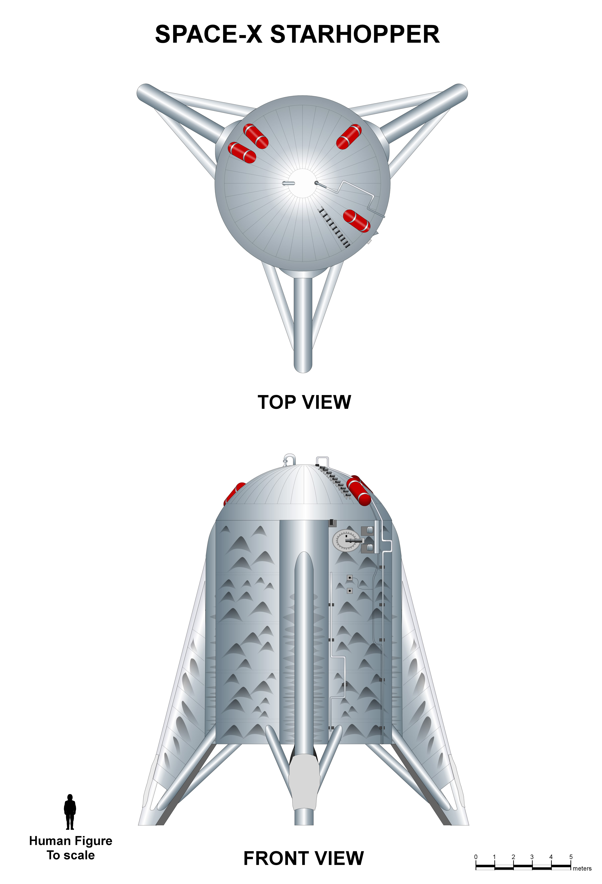

La storia dei prototipi comincia con una macchina che somigliava poco all’astronave promessa. Starhopper aveva un compito ristretto: portare Raptor fuori dal banco, dentro un veicolo capace di controllarsi e muoversi. La sua forma non doveva convincere un cliente marziano. Doveva consentire di imparare.


Un motore dentro un sistema
Una prova al banco non mostra tutto ciò che cambia durante il volo. Alimentazione, movimento dei liquidi, vibrazioni, guida e risposta del motore devono convivere. Un veicolo semplice permette di affrontare questa integrazione prima di aggiungere scudo termico, superfici mobili e una missione spaziale.
Nel 2019 Starhopper passò dalle brevi prove vincolate ai voli liberi. Il salto finale del 27 agosto, con un obiettivo di circa 150 metri, rese evidente che quel grosso dimostratore poteva alzarsi, spostarsi e tornare a terra sotto controllo. Non dimostrò il rientro orbitale. Dimostrò una parte indispensabile e molto più circoscritta.
Imparare a costruire i serbatoi
Il programma successivo doveva affrontare un’altra scala. Una struttura grande e relativamente leggera deve sostenere pressioni interne e carichi, mantenere tenuta e tollerare temperature molto diverse. Saldatura e qualità non sono dettagli estetici: determinano il comportamento del serbatoio.
La prova di pressione può avere obiettivi differenti. A volte si cerca di verificare un margine senza perdere l’articolo; altre volte si porta deliberatamente un campione fino al limite. Il video di una rottura non basta per classificare l’evento. Servono il piano della prova e il risultato atteso.
Tre domande, tre tipi di prova
SN5 e SN6: il cilindro comincia a volare
Il 4 agosto 2020 SN5 compì un salto a circa 150 metri. SN6 proseguì questa fase nel mese successivo. Non avevano ancora il profilo completo delle navi destinate alla discesa aerodinamica ad alta quota. La somiglianza con un serbatoio volante era coerente con la domanda da risolvere: controllare una struttura più vicina al futuro veicolo, con un Raptor funzionante.
Il metodo permetteva di non chiedere tutto al primo esemplare. Una parte della storia di Starship sta proprio in questa scomposizione. Prima la struttura e la propulsione; poi la geometria della nave e la rotazione finale; più avanti la separazione da Super Heavy e il riscaldamento del rientro.
La velocità ha una condizione
Produrre rapidamente nuovi articoli può ridurre il costo del tempo perduto. Non rende ogni perdita vantaggiosa. Una prova è utile quando mette alla verifica un’ipotesi, produce informazioni utilizzabili e porta a una correzione. Se un guasto torna identico senza essere compreso, la disponibilità di molti prototipi rischia di nascondere il problema invece di risolverlo.
Starhopper e i primi SN furono dunque una scuola materiale. La lezione successiva sarebbe stata più difficile da guardare e più vicina all’idea della nave: farla cadere in modo controllato, ruotarla e fermarla a pochi metri da terra.
Fonti pubbliche e tracce
- SpaceX, archivio Starhopper e voli dei prototipi. Archivio storico del costruttore; non usare le date-obiettivo di allora come calendario attuale.
- SpaceX, archivio del salto SN5 del 4 agosto 2020. Volo a bassa quota, non rientro orbitale.
- SpaceX, archivio dei prototipi SN. SN6 e la campagna di voli a bassa quota.